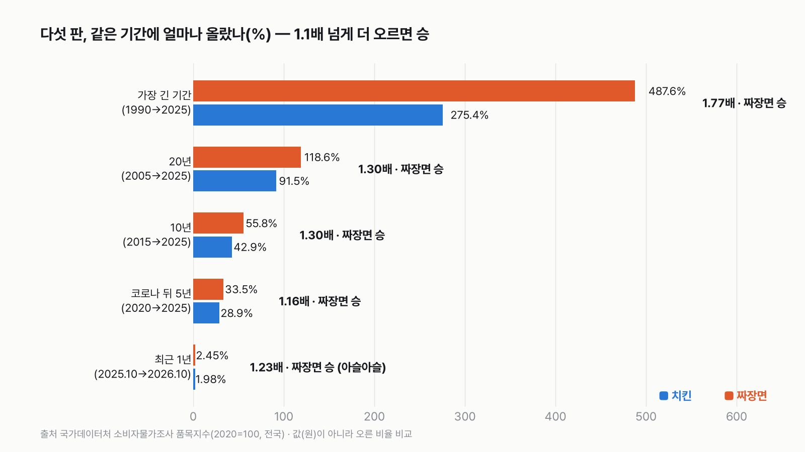
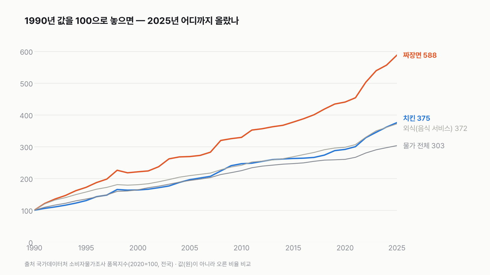
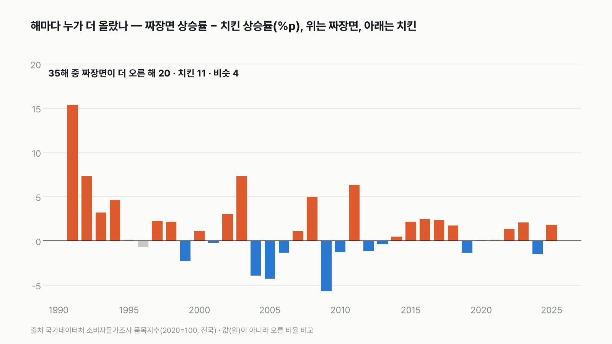

짜장면 vs 치킨, 값이 더 많이 오른 국민 음식은 어느 쪽일까
"요즘 치킨 너무 비싸졌다"와 "짜장면이 예전 짜장면 값이 아니다"는 말, 둘 다 들어 봤죠? 어느 쪽 말이 더 맞는지 같은 자로 재 봐요.

독자 투표
짜장면 vs 치킨, 다섯 판 승부로 값이 더 많이 오른 국민 음식은?
이 대결의 규칙 자세히 (자료·판정 기준)
3줄 요약
- 이사 날 시켜 먹는 짜장면과, 금요일 밤에 시켜 먹는 치킨 가운데 지난 세월 값이 더 많이 오른 쪽을 가려요.
- 소비자물가 품목지수로 겨뤄요. 가격(원)이 아니라 '같은 기간에 몇 % 올랐나'를 비교해요. 더 오른 쪽이 덜 오른 쪽의 1.1배를 넘어야 이기고, 아니면 비겨요.
- 가장 긴 기간, 20년, 10년, 코로나 뒤 5년, 최근 1년으로 다섯 판을 겨뤄요.
조건과 규칙
- 자료는 국가데이터처 「소비자물가조사」의 품목지수(2020년 = 100, 전국)예요. 짜장면(표 이름은 '자장면')과 치킨이 같은 표에 들어 있어요. 같은 표 안의 값만 써요.
- 품목지수는 값(원)이 아니라 같은 품질의 가격이 얼마나 변했는지를 나타내요. 그래서 '몇 % 올랐나'만 비교해요. 짜장면 한 그릇과 치킨 한 마리 중 어느 쪽이 비싼지는 따지지 않아요.
- 판정: 판마다 두 상승률을 나눠서, 큰 쪽이 작은 쪽의 1.1배 이상이면 큰 쪽 승, 아니면 비겨요. 두 상승률 차이가 1%p 안쪽이면 '아슬아슬'로 따로 표시해요(판정은 그대로).
- 다섯 판: ① 둘 다 값이 있는 가장 긴 기간(연평균) ② 20년(2005→2025) ③ 10년(2015→2025) ④ 코로나 뒤 5년(2020→2025) ⑤ 최근 1년(최신 달과 1년 전 같은 달).
- 다섯 판 가운데 더 많이 이긴 쪽이 최종 승자예요. 승수가 같으면 비겨요.
- 기간과 규칙은 값을 받기 전에 정해 커밋했어요.
결과 요약
짜장면 5승, 치킨 0승 → 짜장면 승
몇 배가 됐나(지수 배율)로 재면 짜장면 2승 3무예요. 치킨이 이기는 판은 없어요.
- 가장 긴 기간(1990→2025): 짜장면은 487.6%, 치킨은 275.4% 올랐어요. 1.77배로 짜장면 승이에요.
- 20년(2005→2025): 118.6% 대 91.5%, 1.30배로 짜장면 승이에요.
- 10년(2015→2025): 55.8% 대 42.9%, 1.30배로 짜장면 승이에요.
- 코로나 뒤 5년(2020→2025): 33.5% 대 28.9%, 1.16배로 짜장면 승이에요.
- 최근 1년(2025년 10월→2026년 10월): 2.45% 대 1.98%, 1.23배로 짜장면 승이에요. 다만 차이가 0.47%p라 아슬아슬한 승이에요.
그래서? 1990년에 짜장면과 치킨을 1만 원어치씩 샀다면, 같은 품질로 2025년엔 짜장면은 5만 8,760원, 치킨은 3만 7,540원어치 값이 돼요. 값이 더 많이 오른 국민 음식은 짜장면이에요.
독자 예상 vs 데이터 결과
짜장면 vs 치킨, 다섯 판 승부로 값이 더 많이 오른 국민 음식은?
데이터로 보면 짜장면. 소비자물가 품목지수로 같은 기간 상승률을 견줬어요. 1990→2025 짜장면 487.6%·치킨 275.4%(1.77배), 20년 1.30배, 10년 1.30배, 코로나 뒤 5년 1.16배, 최근 1년 1.23배(2.45% 대 1.98%, 차이 0.47%p, 아슬아슬)로 다섯 판 모두 짜장면이 더 올랐어요.
3줄 요약
- 이사 날 시켜 먹는 짜장면과, 금요일 밤에 시켜 먹는 치킨 가운데 지난 세월 값이 더 많이 오른 쪽을 가려요.
- 소비자물가 품목지수로 겨뤄요. 가격(원)이 아니라 '같은 기간에 몇 % 올랐나'를 비교해요. 더 오른 쪽이 덜 오른 쪽의 1.1배를 넘어야 이기고, 아니면 비겨요.
- 가장 긴 기간, 20년, 10년, 코로나 뒤 5년, 최근 1년으로 다섯 판을 겨뤄요.


1판 가장 긴 기간: 짜장면 승(1.77배)
표에서 짜장면은 1975년부터, 치킨은 1990년부터 값이 있어요. 그래서 둘 다 있는 1990년부터 2025년까지를 봤어요. 그 35년 동안 짜장면 지수는 22.7에서 133.5로 5.9배가 됐어요. 치킨은 34.3에서 128.9로 3.8배가 됐어요. 오른 비율로는 487.6% 대 275.4%예요.
치킨은 외식 전체와 거의 나란히 올랐어요
같은 표의 '음식 서비스'(외식 전체)는 1990년부터 2025년까지 271.5% 올랐어요. 치킨(275.4%)과 거의 같아요. 물가 전체는 203.0% 올랐어요. 치킨은 물가 전체보다는 많이, 외식 평균만큼 올랐어요. 짜장면(과 짬뽕, 468.5%)은 외식 평균보다 훨씬 위로 올라갔어요.


2판 20년, 3판 10년: 둘 다 1.30배
2005년부터 20년 동안 짜장면은 118.6%, 치킨은 91.5% 올랐어요. 짜장면은 두 배를 넘었고, 치킨은 두 배에 조금 못 미쳐요. 2015년부터 10년은 55.8% 대 42.9%예요. 두 판 모두 1.30배라 짜장면이 넉넉하게 이겼어요.
4판 코로나 뒤 5년: 짜장면 승(1.16배)
2020년을 100으로 놓으면 2025년에 짜장면은 133.5, 치킨은 128.9예요. 33.5% 대 28.9%로, 1.1배 선을 넘겨 짜장면이 이겼어요. 다섯 판 중 1.1배 선에 가장 가까운 판이에요. 몇 배가 됐나(지수 배율)로 재면 133.5 ÷ 128.9 = 1.04배라 비겨요. 상승률로는 1.16배, 지수 배율로는 1.04배예요.
5판 최근 1년: 아슬아슬한 짜장면 승
2025년 10월부터 2026년 10월까지 짜장면은 2.45%, 치킨은 1.98% 올랐어요. 나누면 1.23배라 규칙대로는 짜장면 승이에요. 하지만 차이는 0.47%p뿐이라, 미리 정한 기준대로 '아슬아슬'로 표시했어요. 같은 기간 외식 전체는 2.9%, 물가 전체는 2.8% 올랐어요. 최근 1년만 보면 둘 다 평균보다 덜 올랐어요.
해마다 보면 치킨이 이긴 해도 11번 있어요
1991년부터 2025년까지 35해를 한 해씩 겨루면, 짜장면이 더 오른 해가 20번, 치킨이 더 오른 해가 11번, 비슷한 해가 4번이에요. 치킨이 이긴 해는 2004~2013년에 몰려 있어요. 이 10년 동안 치킨이 7번 이겼어요. 2009년엔 치킨이 7.5% 오를 때 짜장면은 1.8% 올랐어요.


짜장면은 몇 번 크게 뛰었어요
짜장면이 한 해 10% 넘게 오른 해는 1991년(21.1%), 1992년(11.7%), 1994년(10.3%), 1998년(14.1%), 2003년(10.5%), 2008년(13.1%), 2022년(10.8%)이에요. 치킨이 한 해 10% 넘게 오른 해는 1998년(11.9%) 한 번뿐이에요. 짜장면은 몇 해에 한 번 크게 뛰고, 치킨은 비교적 고르게 올랐어요.
값이 내린 해도 있어요
1999년엔 둘 다 값이 내렸어요. 짜장면은 3.5%, 치킨은 1.2% 내렸어요. 규칙대로 덜 내린 치킨이 그해 승자예요. 표에서 두 음식이 함께 내린 해는 이 한 해뿐이에요.
짬뽕도 짜장면과 거의 같이 올랐어요
같은 표의 짬뽕은 1990년부터 2025년까지 468.5% 올랐어요. 짜장면(487.6%)과 비슷해요. 20년 동안도 짬뽕 119.2%, 짜장면 118.6%로 거의 같아요. 이 표만으로 이유를 가를 수는 없지만, 짜장면 혼자가 아니라 중국집 대표 메뉴가 함께 많이 올랐다는 건 보여요.
재는 방법을 바꿔도 짜장면이 앞서요
상승률 대신 '끝 지수 ÷ 시작 지수'(몇 배가 됐나)끼리 나누면 차이가 작아 보여요. 이렇게 재면 가장 긴 기간(1.57배)과 20년(1.14배)은 짜장면 승이고, 10년(1.09배), 코로나 뒤(1.04배), 최근 1년(1.01배)은 비겨요. 이렇게 세도 짜장면 2승 3무로 짜장면이 이겨요. 치킨이 이기는 판은 어느 방법으로도 없어요.
'치킨이 비싸졌다'는 느낌과 숫자
치킨값 이야기는 자주 들리지만, 품목지수로 보면 치킨은 외식 평균만큼 올랐어요. 품목지수는 같은 품질의 값을 따라가요. 앱에 찍히는 값은 메뉴값과 배달비를 더한 값이에요. 그래서 주문할 때 따로 내는 배달비나 더 비싼 메뉴로 옮겨 간 것까지 다 담았는지는 이 표만으로 알 수 없어요. 내가 느끼는 값과 지수가 다를 수 있는 이유예요.
마무리
짜장면과 치킨을 같은 자로 재면, 지난 35년 동안 값이 더 많이 오른 건 짜장면이에요. 다섯 판 모두 짜장면이 앞섰고, 최근 1년만 아슬아슬했어요. 다음에 짜장면을 시킬 때, 1990년 1만 원어치가 지금 5만 8천 원어치가 됐다는 걸 한 번 떠올려 보세요.
이 숫자는 어디서 왔나요
출처
기준일 연평균 지수는 2025년, 월 지수는 2026년 10월까지예요. KOSIS 값은 2026년 11월 10일에 받았어요. 조건은 2026년 11월 10일, 지수 값을 받기 전에 정했어요.
국가데이터처소비자물가조사
- 지출목적별 소비자물가지수(품목포함, 2020=100)KOSIS DT_1J22001원본 보기
자장면·치킨·짬뽕·음식 서비스·총지수, 연 1975~2025, 월 2024.11~2026.10
어떻게 셌나요
- 품목지수: 국가데이터처 「소비자물가조사」 지출목적별 소비자물가지수(품목포함, 2020=100), 전국. 짜장면은 '자장면'(K01119), 치킨은 '치킨'(K01129)이에요.
- 상승률 = 끝 지수 ÷ 시작 지수 − 1이에요. 1~4판은 연평균 지수, 5판은 월 지수를 썼어요.
- 판정: 두 상승률 중 큰 쪽 ÷ 작은 쪽이 1.1 이상이면 승, 아니면 무승부예요. 둘 다 내린 해는 덜 내린 쪽이 이겨요(해마다 비교에만 나와요).
- 1만 원 환산: 1만 원 × (2025년 지수 ÷ 1990년 지수)예요. 같은 품질 기준의 어림이에요.
| 항목 | 값 | 잰 것 / 가정 |
|---|---|---|
| 짜장면 지수 1990 · 2005 · 2015 · 2020 · 2025 | 22.723 · 61.066 · 85.703 · 100 · 133.52 | 잰 것 |
| 치킨 지수 1990 · 2005 · 2015 · 2020 · 2025 | 34.337 · 67.311 · 90.215 · 100 · 128.89 | 잰 것 |
| 짜장면 · 치킨 지수 2025년 10월 → 2026년 10월 | 135.53→138.85 · 130.00→132.58 | 잰 것 |
| 1.1배 승패 규칙, 1%p 아슬아슬 기준 | — | 가정(계산 전에 정함) |
| 판 기간 다섯 개 | — | 가정(계산 전에 정함) |
한계 5가지
이 데이터로 말할 수 없는 것
- 품목지수는 값(원)이 아니에요. 짜장면 한 그릇과 치킨 한 마리가 지금 각각 얼마인지는 이 글에서 다루지 않아요. 같은 기준으로 두 음식의 원 가격을 함께 주는 공식 표를 찾지 못해서, 다른 표의 값을 섞지 않았어요.
- 소비자물가조사는 같은 규격의 값을 따라가요. 조사 규격이 언제 어떻게 바뀌었는지는 이 표에 나오지 않아요.
- 배달비가 치킨·짜장면 지수에 들어가는지는 이 표만으로 확인하지 못했어요.
- 값이 오른 이유(재료값, 임대료, 인건비 등)는 이 표로 알 수 없어요. 그래서 이유는 쓰지 않았어요.
- 전국 평균이에요. 지역마다 오른 정도는 다를 수 있어요.
다음 대결
대결 다 보기삼겹살 vs 돼지갈비
삼겹살 vs 돼지갈비(식당), 값이 더 많이 오른 쪽은?
A삼겹살vsB돼지갈비
투표하러 가기
대결물가투표했어요된장찌개 승김치찌개 vs 된장찌개
김치찌개 vs 된장찌개 백반, 값이 더 많이 오른 쪽은?
A김치찌개vsB된장찌개
투표하러 가기
대결물가투표했어요미용실 승이발 vs 미용실
이발 vs 미용실, 값이 더 많이 오른 쪽은?
A이발vsB미용실
투표하러 가기
대결물가투표했어요짬뽕 승짜장면 vs 짬뽕
짜장면 vs 짬뽕, 값이 더 많이 오른 쪽은?
A짜장면vsB짬뽕
투표하러 가기
대결물가투표했어요무승부아이스크림 vs 과자
아이스크림 vs 과자, 값이 더 많이 오른 쪽은?
A아이스크림vsB과자
투표하러 가기
대결물가투표했어요두유 승우유 vs 두유
우유 vs 두유, 값이 더 많이 오른 쪽은?
A우유vsB두유
투표하러 가기
대결물가투표했어요우편 승택배 vs 우편
택배 vs 우편, 요금이 더 많이 오른 쪽은?
A택배vsB우편
투표하러 가기
대결물가투표했어요탄산음료 승생수 vs 탄산음료
생수 vs 탄산음료, 값이 더 많이 오른 쪽은?
A생수vsB탄산음료
투표하러 가기
새 글 나오면 받아 보기
피드 리더 앱에 이 사이트 주소를 한 번 넣어 두면, 새 글이 올라올 때 앱에 떠요. 가입이나 메일 주소는 필요 없어요.
받는 법 보기
- 피드 리더 앱을 하나 골라요. 새 글을 모아 보여 주는 앱이에요. 예를 들면 Feedly나 Inoreader가 있어요. 둘 다 무료고 웹·휴대폰에서 써요.
- 앱에서 '구독 추가'(+)를 누르고 아래 주소를 붙여 넣어요.
- 끝이에요. 새 글이 올라오면 앱 목록에 떠요.
https://protofu.github.io/opendata-insight/feed.xmlFeedly를 쓴다면 여기를 눌러 바로 추가할 수도 있어요.